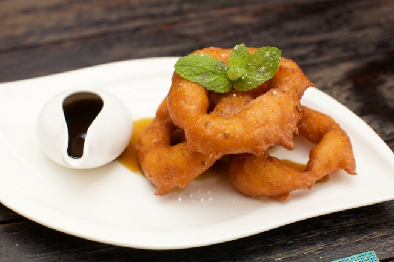

Традиционные десерты в разных странах
- Пикаронес, Перу
Этими пряными пончиками любят лакомиться многие в Южной Америке, но именно в Перу они приобрели статус мегапопулярного десерта. Готовят их из тыквы или сладкого картофеля, а подают с медом или сиропом из тростникового сахара и цитрусовых.
- Чуррос, Испания
Самый любимый у испанцев десерт представляет собой простые палочки из заварного теста, обжаренные во фритюре. Едят их, обмакивая в горячий шоколад.
- Вагаси, Япония
Блюдо из бобовых, риса, каштанов, различных трав и чая. И хотя в Японии вагаси считаются национальным десертом, на вкус они совсем не сладкие.
- Печенье Хангва, Корея
Традиционное корейское угощение с зерном, медом, съедобными цветами и кореньями.

- Пахлава, Турция
Пахлава — это визитная карточка Востока. Готовят ее из слоеного теста. Каждый слой десерта промазывают маслом и медом, а также присыпают орехами.